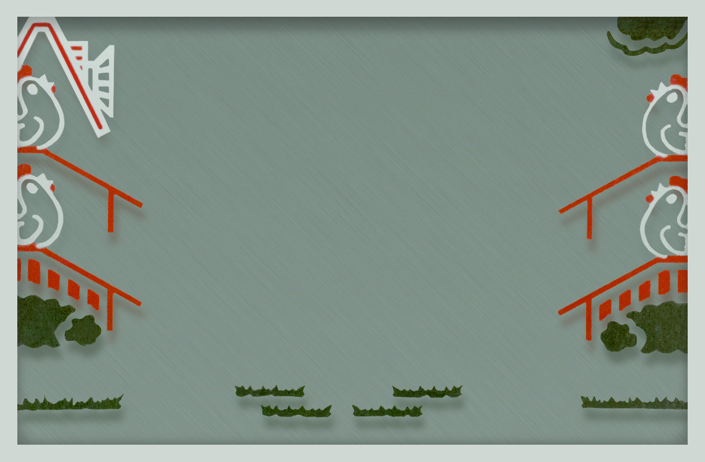
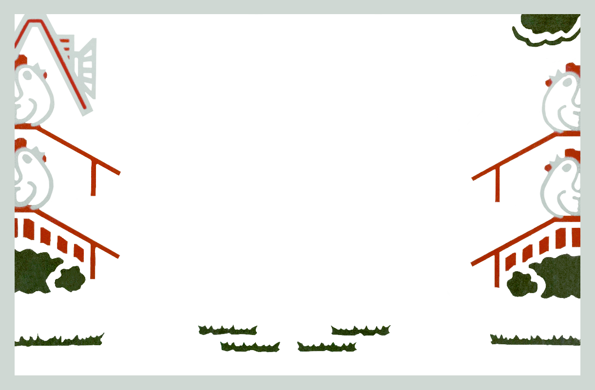
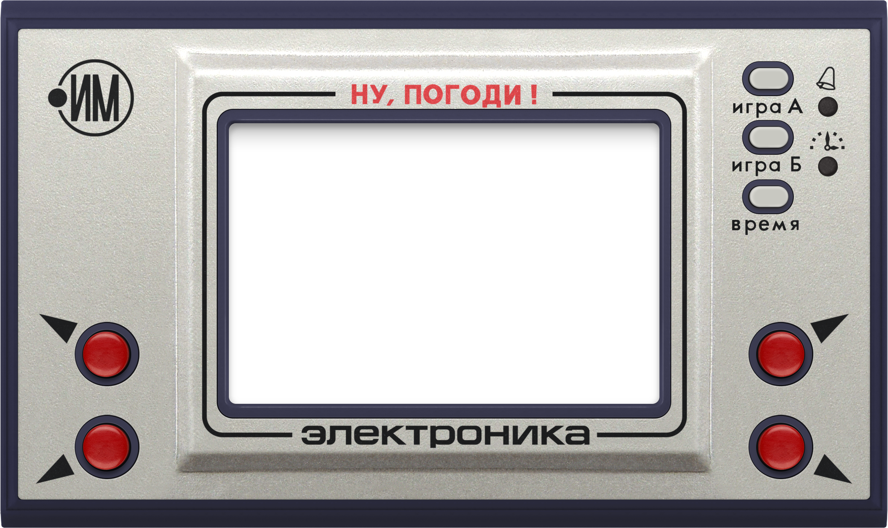

Нажмите «Игра А» или «Игра Б»
Нажимайте красные кнопки на корпусе.Поверните телефон горизонтально, чтобы увеличить игру.
powered by @positroid
Для игры нужно включить JavaScript в браузере.
Поймайте корзиной яйца с четырёх лотков. За каждое пойманное яйцо — одно очко.
Q / A — слева вверху / внизу.P / L — справа вверху / внизу.1 / 2 — игра А / Б. T — время.B — будильник. Пробел — пауза.Кнопки на корпусе работают мышью и касанием.
Нажмите маленькую кнопку под значком часов. Левыми красными кнопками установите часы, правыми — минуты. Затем нажмите «Время». Обозначения ДП и ПП означают «до полудня» и «после полудня».
Для настройки будильника нажмите маленькую кнопку под колокольчиком и выставьте время теми же красными кнопками. Повторное нажатие включает или выключает колокольчик. Кнопка «Время» завершает настройку и выключает звонок.
В веб-версии игра приостанавливается при уходе со страницы. Пауза, выключение звука и полноэкранный режим находятся под корпусом.
В браузере исполняется оригинальная прошивка ИМ-02 на эмуляторе КБ1013ВК1-2 / SM5A. Сегменты, правила, ускорение, часы и звуковые сигналы задаёт прошивка.
Ядро основано на MAME (hap, при участии Igor). Оформление: Lee Robson (hydef), скан фона: Henrik Algestam. Источники и границы точности.